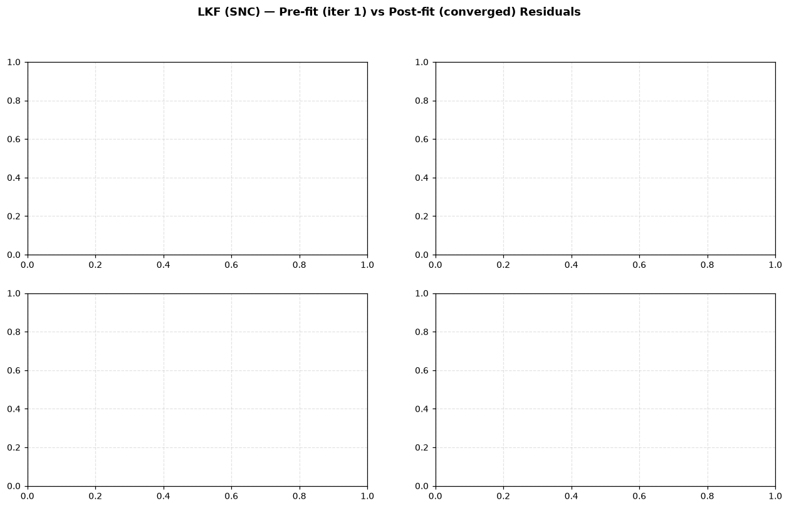

# Sequential Orbit Determination — Complete Demo#
Scarabaeus OD Framework | Last revised 2026
What this notebook covers#
Sequential orbit determination processes measurements one at a time, updating the state estimate and covariance recursively at each epoch. This is operationally efficient, naturally handles process noise, and supports real-time processing.
For the full batch-filter catalogue (LSB, SRIF-Batch, corner plots, covariance propagation, solution saving) see ``advanced_IdealMSR_BatchOD.ipynb``.
Topics#
# |
Topic |
|---|---|
1 |
True trajectory and measurements (DSS-14 + DSS-63) |
2 |
LKF with SNC process noise |
3 |
Process noise theory — SNC vs. DMC |
4 |
SRIF Sequential Filter |
5 |
RTS smoother |
6 |
Multi-leg OD with MissionSequence (two legs + impulsive burn) |
7 |
Consider parameters (η_SRP) |
8 |
Measurement editing — see BatchOD notebook |
9 |
Solution saving and analysis — see BatchOD notebook |
How to run#
Run from the project root directory (scarabaeus/).
0. Imports and Setup#
[1]:
import os, sys
import numpy as np
import numpy.random as rnd
import matplotlib.pyplot as plt
from pathlib import Path
import scarabaeus as scb
import supplementary as supp
# ── tutorial data and output paths ───────────────────────────────
data = supp.load_data()
tut_result_path = Path.cwd() / 'tutorial_results/meas_gen/radiometric'
tut_kernels_path = Path(data.mk.path).parent.parent / 'scenario'
tut_result_path.mkdir(parents=True, exist_ok=True)
tut_kernels_path.mkdir(parents=True, exist_ok=True)
kg, km, sec = scb.Units.get_units(['kg', 'km', 'sec'])
J2000, ITRF93, ECLIPJ2000, IAUEARTH = scb.Frame.generate_common_frames()
frame = J2000
origin = scb.CelestialBody.from_constants('SUN')
scb.SpiceManager.clear_kernels()
scb.SpiceManager.load_kernel_from_mkfile(data.mk.path)
print("Kernels loaded.")
# ── common spacecraft & initial state ────────────────────────────
dry_mass = scb.ArrayWUnits(1500.0, kg)
fuel_mass = scb.ArrayWUnits(500.0, kg)
area = scb.ArrayWUnits(1e-6, km**2)
cr = scb.ArrayWUnits(1.5, None)
Orbiter = scb.Spacecraft('Orbiter_True', -2000,
dry_mass+fuel_mass, area, cr)
time_0 = scb.SpiceManager.jd2et(2461809.72995654 + 1/3)
time_f = scb.SpiceManager.jd2et(2461809.72995654 + 3)
dt_step = 30 * 60
epoch_array = scb.EpochArray(np.arange(time_0, time_f, dt_step), sys='TDB')
epoch_0 = epoch_array[0]
pos_0 = scb.ArrayWFrame(
np.array([-1.1123095885148e+08, 8.9094345479316e+07, 3.8656500948069e+07]),
km, frame)
vel_0 = scb.ArrayWFrame(
np.array([-20.6936999825159, -16.7800270812616, -6.6437327193572]),
km/sec, frame)
SCB supplementary data out of date.
---------------------------------------------------------------------------
StdinNotImplementedError Traceback (most recent call last)
Cell In[1], line 11
7 import scarabaeus as scb
8 import supplementary as supp
9
10 # ── tutorial data and output paths ───────────────────────────────
---> 11 data = supp.load_data()
12
13 tut_result_path = Path.cwd() / 'tutorial_results/meas_gen/radiometric'
14 tut_kernels_path = Path(data.mk.path).parent.parent / 'scenario'
File ~/scb_public/scarabaeus/docs/online_documentation/sphinx_files/_collections/tutorials/supplementary/supp_data.py:433, in load_data()
431 waiting = True
432 while waiting:
--> 433 response = input("\nDownload and generate missing files? (y/n): ")
434 match response.strip().lower():
435 case "y":
File ~/scb_public/scarabaeus/.venv/lib/python3.11/site-packages/ipykernel/kernelbase.py:1514, in Kernel.raw_input(self, prompt)
1512 if not self._allow_stdin:
1513 msg = "raw_input was called, but this frontend does not support input requests."
-> 1514 raise StdinNotImplementedError(msg)
1515 return self._input_request(
1516 str(prompt),
1517 self._get_shell_context_var(self._shell_parent_ident),
1518 self.get_parent("shell"),
1519 password=False,
1520 )
StdinNotImplementedError: raw_input was called, but this frontend does not support input requests.
Enhanced Plotting Helpers#
The cells below add calendar-date x-axis versions of the plots above, plus new visualization types: pre/post residual comparisons, state errors with ±3σ covariance bounds, covariance evolution, and corner covariance plots.
Helper functions:
et2dt(et_arr)— converts SPICE ET (seconds) to Pythondatetimeobjectsfmt_cal(ax)— appliesAutoDateLocator + DateFormatterfor a clean calendar x-axisadd_hrs_axis(ax)— adds a secondary top x-axis in hours from t0resid_from_filter(flt, ds)— extracts(t_pre, r_pre, t_post, r_post)arrayscorner_cov(P, labels)— lower-triangle corner plot with RdBu_r correlation colouring
[2]:
from datetime import datetime, timedelta
import matplotlib.dates as mdates
import matplotlib.ticker as mticker
from matplotlib import cm
from matplotlib.colors import Normalize
plt.rcParams.update({
'font.size': 10, 'axes.titlesize': 11, 'axes.labelsize': 10,
'xtick.labelsize': 9, 'ytick.labelsize': 9, 'legend.fontsize': 8,
'figure.dpi': 110, 'axes.grid': True, 'grid.alpha': 0.35, 'grid.linestyle': '--',
})
CMAP = cm.tab10
COLORS = [CMAP(i / 10) for i in range(10)]
# reference epoch for the hours-from-t0 secondary axis
t0_et = epoch_array.times.values[0]
def et2dt(et_arr):
"""Convert SPICE ET seconds (TDB from J2000) to list of datetime objects."""
_J2000 = datetime(2000, 1, 1, 12, 0, 0)
return [_J2000 + timedelta(seconds=float(t)) for t in np.atleast_1d(et_arr)]
def fmt_cal(ax):
"""Apply calendar-date tick formatting to a matplotlib axis."""
ax.xaxis.set_major_locator(mdates.AutoDateLocator(minticks=4, maxticks=9))
ax.xaxis.set_major_formatter(mdates.DateFormatter("%b %d\n%H:%M"))
def add_hrs_axis(ax, t0=None):
"""Add a secondary top x-axis showing hours from t0."""
t0 = t0 if t0 is not None else t0_et
from matplotlib.dates import date2num
t0_num = date2num(et2dt([t0])[0])
ax2 = ax.secondary_xaxis(
"top",
functions=(lambda x: (x - t0_num) * 24, lambda x: x / 24 + t0_num),
)
ax2.set_xlabel("Hours from t0 [TDB]", fontsize=8)
ax2.xaxis.set_major_formatter(mticker.FormatStrFormatter("%.0f h"))
return ax2
def resid_from_filter(flt_obj, ds_name, iteration=-1):
"""Return (t_pre, r_pre, t_post, r_post) numpy arrays for a dataset name.
iteration : int
Which iteration's pre-fit residuals to return.
0 → first iteration (raw O-C against initial reference).
-1 → last iteration (default, same as the converged solution).
Post-fit residuals always come from the final (converged) iteration.
"""
if (iteration == 0
and hasattr(flt_obj, '_solution_history')
and flt_obj._solution_history):
sol0 = flt_obj._solution_history[0]
pre = (sol0.prefits or {}).get(ds_name, [])
else:
pre = flt_obj.prefit_residuals.get(ds_name, [])
post = flt_obj.postfit_residuals.get(ds_name, [])
t_ds = np.array([])
for ds in flt_obj.measurement_data.datasets:
if ds.set_name == ds_name:
t_ds = np.array(ds.data["t2"])
break
t_pre = t_ds[:len(pre)] if len(pre) else np.array([])
r_pre = np.array([d[0] for d in pre]) if pre else np.array([])
t_post = t_ds[:len(post)] if len(post) else np.array([])
r_post = np.array([d[0] for d in post]) if post else np.array([])
return t_pre, r_pre, t_post, r_post
def corner_cov(P, labels, title="Covariance Corner Plot", figsize=(10, 9)):
"""
Corner plot from a covariance matrix.
Diagonal: 1D Gaussian marginal (dark-shaded ±1σ region).
Lower triangle: 2D confidence ellipses at 1σ / 2σ / 3σ (chi2, 2 dof).
Upper triangle: hidden.
"""
from matplotlib.patches import Ellipse
SCALES = [1.5150, 2.4477, 3.4395]
ALPHAS = [0.55, 0.30, 0.15 ]
COL, EDG = 'steelblue', 'navy'
n = P.shape[0]
sig = np.sqrt(np.diag(P))
fig, axes = plt.subplots(n, n, figsize=figsize,
gridspec_kw={'hspace': 0.05, 'wspace': 0.05})
if n == 1:
axes = np.array([[axes]])
fig.suptitle(title, fontsize=11, fontweight='bold')
for i in range(n):
for j in range(n):
ax = axes[i, j]
ax.tick_params(labelsize=5)
if i == j:
s = sig[i]
lim = 3.8 * s
x = np.linspace(-lim, lim, 300)
y = np.exp(-0.5 * (x / s) ** 2)
ax.plot(x, y, color=COL, lw=1.5)
ax.fill_between(x, y, alpha=0.18, color=COL)
ax.fill_between(x[np.abs(x) <= s], y[np.abs(x) <= s],
alpha=0.45, color=COL)
ax.axvline(0, color='k', lw=0.5, ls='--')
ax.set_xlim(-lim, lim)
ax.set_ylim(0, 1.30)
ax.set_yticks([])
ax.set_xticks([-2*s, 0, 2*s])
ax.text(0.97, 0.97, f'1\u03c3={s:.2e}',
transform=ax.transAxes, fontsize=6,
ha='right', va='top', color=EDG, fontweight='bold')
ax.set_title(labels[i], fontsize=7, pad=2)
if i < n - 1:
ax.set_xticklabels([])
elif i > j:
P2 = np.array([[P[j,j], P[j,i]], [P[i,j], P[i,i]]])
ev, evec = np.linalg.eigh(P2)
ev = np.maximum(ev, 0.0)
angle = np.degrees(np.arctan2(evec[1, 1], evec[0, 1]))
ax.axhline(0, color='k', lw=0.4, ls='--', alpha=0.4)
ax.axvline(0, color='k', lw=0.4, ls='--', alpha=0.4)
for scale, alpha in zip(SCALES, ALPHAS):
ax.add_patch(Ellipse(
xy=(0, 0),
width =2 * scale * np.sqrt(ev[1]),
height=2 * scale * np.sqrt(ev[0]),
angle =angle,
facecolor=COL, edgecolor=EDG,
linewidth=0.8, alpha=alpha,
))
rho = P[i, j] / (sig[i] * sig[j])
ax.text(0.05, 0.97, f'\u03c1={rho:+.2f}',
transform=ax.transAxes, fontsize=6.5,
color=EDG, va='top', fontweight='bold')
ax.set_xlim(-3.8*sig[j], 3.8*sig[j])
ax.set_ylim(-3.8*sig[i], 3.8*sig[i])
ax.set_xticks([-2*sig[j], 0, 2*sig[j]])
ax.set_yticks([-2*sig[i], 0, 2*sig[i]])
if i < n - 1:
ax.set_xticklabels([])
if j > 0:
ax.set_yticklabels([])
if j == 0:
ax.set_ylabel(labels[i], fontsize=7, labelpad=2)
if i == n - 1:
ax.set_xlabel(labels[j], fontsize=7, labelpad=2)
else:
ax.set_visible(False)
plt.tight_layout()
return fig
print(f"Plotting helpers ready. t0 = {et2dt([t0_et])[0].strftime('%Y-%m-%d %H:%M:%S')} TDB")
---------------------------------------------------------------------------
NameError Traceback (most recent call last)
Cell In[2], line 16
12 CMAP = cm.tab10
13 COLORS = [CMAP(i / 10) for i in range(10)]
14
15 # reference epoch for the hours-from-t0 secondary axis
---> 16 t0_et = epoch_array.times.values[0]
17
18
19 def et2dt(et_arr):
NameError: name 'epoch_array' is not defined
1. True Trajectory and Measurements#
We propagate the truth and generate Range + RangeRate measurements on it (DSS-14). These are the “observed” measurements the filter will try to explain.
The measurement generation is identical to the Batch notebook — see that notebook for the full measurement-model catalogue (Doppler, DDOR, optical navigation).
[3]:
# ── propagate truth ──────────────────────────────────────────────
third_bodies = scb.CelestialBody.from_constants(['MERCURY', 'VENUS', 'EARTH'])
state_truth = scb.StateDefinition.from_components([
('position', 3, 'estimated', 'dynamic', Orbiter, pos_0),
('velocity', 3, 'estimated', 'dynamic', Orbiter, vel_0),
])
sv_truth = scb.StateArray(epoch=epoch_0, origin=origin, state=state_truth)
fm_truth = scb.ForceModelTranslation(primary_body=Orbiter,
third_bodies=third_bodies, cannonball_SRP=True)
prop_truth = scb.Propagator(primary_body=Orbiter, state_vector=sv_truth,
tspan=epoch_array, force_models=fm_truth)
prop_truth.propagate()
state_prop_truth = prop_truth.propagated_state_array
true_spk = str(tut_kernels_path / 'seq_orbiter_true.bsp')
if os.path.isfile(true_spk): os.remove(true_spk)
orbiter_traj_true = scb.Trajectory(state_array=state_prop_truth)
orbiter_traj_true.write_to_spk(true_spk)
print("True trajectory saved.")
# ── ground stations ───────────────────────────────────────────────
GS1 = scb.GroundStation('DSS-14')
GS2 = scb.GroundStation('DSS-63')
range_sigma = scb.ArrayWUnits(1e-3, km)
rr_sigma = scb.ArrayWUnits(1e-7, km/sec)
rangerate_sigma = rr_sigma
Range_GS1 = scb.RangeIdeal('GS1 Range', GS1, sigma=range_sigma)
RangeRate_GS1 = scb.RangeRateIdeal('GS1 RRate', GS1, sigma=rr_sigma)
Range_GS2 = scb.RangeIdeal('GS2 Range', GS2, sigma=range_sigma)
RangeRate_GS2 = scb.RangeRateIdeal('GS2 RRate', GS2, sigma=rr_sigma)
for model, stem in [
(Range_GS1, 'seq_range_GS1'),
(RangeRate_GS1, 'seq_rr_GS1'),
(Range_GS2, 'seq_range_GS2'),
(RangeRate_GS2, 'seq_rr_GS2'),
]:
model.write_observed_measurements(
target=Orbiter, epoch_array=epoch_array, noisy=True,
file_name=stem, check_visibility=True, elevation_mask=10.0,
folder_path_override=str(tut_result_path))
obs_range = Range_GS1.observed_measurements(
file_name=str(tut_result_path / 'seq_range_GS1.json'),
meas_name='meas_ideal', units=km)
obs_rr = RangeRate_GS1.observed_measurements(
file_name=str(tut_result_path / 'seq_rr_GS1.json'),
meas_name='meas_ideal', units=km/sec)
obs_range_GS2 = Range_GS2.observed_measurements(
file_name=str(tut_result_path / 'seq_range_GS2.json'),
meas_name='meas_ideal', units=km)
obs_rr_GS2 = RangeRate_GS2.observed_measurements(
file_name=str(tut_result_path / 'seq_rr_GS2.json'),
meas_name='meas_ideal', units=km/sec)
print(f"GS1 Range: {len(obs_range[2].quantity.values)} meas")
print(f"GS1 RRate: {len(obs_rr[2].quantity.values)} meas")
print(f"GS2 Range: {len(obs_range_GS2[2].quantity.values)} meas")
print(f"GS2 RRate: {len(obs_rr_GS2[2].quantity.values)} meas")
---------------------------------------------------------------------------
NameError Traceback (most recent call last)
Cell In[3], line 5
1 # ── propagate truth ──────────────────────────────────────────────
2 third_bodies = scb.CelestialBody.from_constants(['MERCURY', 'VENUS', 'EARTH'])
3
4 state_truth = scb.StateDefinition.from_components([
----> 5 ('position', 3, 'estimated', 'dynamic', Orbiter, pos_0),
6 ('velocity', 3, 'estimated', 'dynamic', Orbiter, vel_0),
7 ])
8 sv_truth = scb.StateArray(epoch=epoch_0, origin=origin, state=state_truth)
NameError: name 'Orbiter' is not defined
2. LKF with SNC Process Noise#
Theory#
The Linearized Kalman Filter (LKF) is the core sequential estimator. At each measurement epoch \(t_k\):
Time update (predict): propagate state and covariance forward with the STM
\[\mathbf{P}_{k|k-1} = \mathbf{\Phi}_{k,k-1}\,\mathbf{P}_{k-1|k-1}\,\mathbf{\Phi}_{k,k-1}^T + \mathbf{Q}_k\]Measurement update (correct): incorporate new measurement \(y_k\)
\[\mathbf{K}_k = \mathbf{P}_{k|k-1}\,\mathbf{H}_k^T\,(\mathbf{H}_k\mathbf{P}_{k|k-1}\mathbf{H}_k^T + \mathbf{R}_k)^{-1}\]\[\hat{\mathbf{x}}_{k|k} = \hat{\mathbf{x}}_{k|k-1} + \mathbf{K}_k(y_k - \mathbf{H}_k\hat{\mathbf{x}}_{k|k-1})\]
State Noise Compensation (SNC)#
SNC models uncharacterised accelerations as white noise added continuously to the velocity:
where \(q_c\) [km²/s³] is the continuous-time noise spectral density.
Tuning Q_cont (SNC):
Too large → wide covariance, accepts noise, position sigma grows fast.
Too small → filter stiffens, can’t track maneuvers or unmodelled forces.
Rule of thumb: \(q_c \approx (\text{expected unmodelled accel})^2 / \text{arc length in sec}\)
Q_cont = scb.ProcessNoiseSettings(type='SNC', Q_cont=Q_cont_matrix)
[4]:
# ── reference spacecraft (perturbed IC) ──────────────────────────
delta_pos_km = np.array([1.0, 1.0, 1.0]) # 1 km error per axis
delta_vel_kms = np.array([1e-3, 1e-3, 1e-3]) # 1 m/s error per axis
def make_ref_sc(name, spice_id, d_pos, d_vel):
sc = scb.Spacecraft(name, spice_id, dry_mass+fuel_mass, area, cr)
pos = scb.ArrayWFrame(pos_0.quantity + scb.ArrayWUnits(d_pos, km), frame)
vel = scb.ArrayWFrame(vel_0.quantity + scb.ArrayWUnits(d_vel, km/sec), frame)
return sc, pos, vel
sc_lkf, pos_lkf, vel_lkf = make_ref_sc('Orbiter_LKF', -2001,
delta_pos_km, delta_vel_kms)
state_lkf = scb.StateDefinition.from_components([
('position', 3, 'estimated', 'dynamic', sc_lkf, pos_lkf),
('velocity', 3, 'estimated', 'dynamic', sc_lkf, vel_lkf),
])
sv_lkf = scb.StateArray(epoch=epoch_0, origin=origin, state=state_lkf)
fm_lkf = scb.ForceModelTranslation(
primary_body=sc_lkf, third_bodies=third_bodies, cannonball_SRP=True)
prop_lkf = scb.Propagator(
primary_body=sc_lkf, state_vector=sv_lkf,
tspan=epoch_array, force_models=fm_lkf)
# ── initial covariance ────────────────────────────────────────────
pos_sig = scb.ArrayWUnits(3.0, km)
vel_sig = scb.ArrayWUnits(3e-3, km/sec)
P0 = scb.CovarianceMatrix(
[pos_sig]*3 + [vel_sig]*3, epoch_array[1], from_list=True)
# ── SNC process noise ─────────────────────────────────────────────
Q_diag = scb.ArrayWUnits(1e-9**2, km**2 * sec**-4)
Q_cont = scb.CovarianceMatrix([Q_diag]*3, epoch_array[0], from_list=True)
pn_snc = scb.ProcessNoiseSettings(type='SNC', Q_cont=Q_cont)
# ── measurement list ──────────────────────────────────────────────
meas_lkf = scb.MeasurementSpec.many(
scb.MeasurementSpec(model=Range_GS1, observed_meas=obs_range,
dataset_name='GS1 Range'),
scb.MeasurementSpec(model=RangeRate_GS1, observed_meas=obs_rr,
dataset_name='GS1 RangeRate'),
scb.MeasurementSpec(model=Range_GS2, observed_meas=obs_range_GS2,
dataset_name='GS2 Range'),
scb.MeasurementSpec(model=RangeRate_GS2, observed_meas=obs_rr_GS2,
dataset_name='GS2 RangeRate'),
)
# ── LKF ──────────────────────────────────────────────────────────
ref_spk_lkf = tut_kernels_path / 'seq_orbiter_ref_lkf.bsp'
if ref_spk_lkf.exists(): ref_spk_lkf.unlink()
lkf = scb.LKF(
propagator = prop_lkf,
settings = scb.FilterSettings(
initial_covariance = P0,
process_noise = pn_snc,
output = scb.OutputSettings(metadata={'filter':'LKF-SNC'}),
),
measurements = meas_lkf,
traj_name = 'seq_orbiter_ref_lkf.bsp',
traj_dir = str(tut_kernels_path),
)
print("Running LKF with SNC ...")
sol_lkf, ni_lkf, conv_lkf = lkf.fit(
max_iterations = 10,
convergence_threshold = 1e-6,
verbose = True,
traj_name = 'seq_orbiter_ref_lkf.bsp',
traj_dir = str(tut_kernels_path),
if_sequential_smooth = False,
)
print(f"Converged: {conv_lkf} after {ni_lkf} iterations")
---------------------------------------------------------------------------
NameError Traceback (most recent call last)
Cell In[4], line 11
7 pos = scb.ArrayWFrame(pos_0.quantity + scb.ArrayWUnits(d_pos, km), frame)
8 vel = scb.ArrayWFrame(vel_0.quantity + scb.ArrayWUnits(d_vel, km/sec), frame)
9 return sc, pos, vel
10
---> 11 sc_lkf, pos_lkf, vel_lkf = make_ref_sc('Orbiter_LKF', -2001,
12 delta_pos_km, delta_vel_kms)
13
14 state_lkf = scb.StateDefinition.from_components([
Cell In[4], line 6, in make_ref_sc(name, spice_id, d_pos, d_vel)
5 def make_ref_sc(name, spice_id, d_pos, d_vel):
----> 6 sc = scb.Spacecraft(name, spice_id, dry_mass+fuel_mass, area, cr)
7 pos = scb.ArrayWFrame(pos_0.quantity + scb.ArrayWUnits(d_pos, km), frame)
8 vel = scb.ArrayWFrame(vel_0.quantity + scb.ArrayWUnits(d_vel, km/sec), frame)
9 return sc, pos, vel
NameError: name 'dry_mass' is not defined
Enhanced: LKF (SNC) — Pre-fit vs Post-fit Residuals (Calendar Date)#
[5]:
fig, axes = plt.subplots(2, 2, figsize=(14, 8))
fig.suptitle("LKF (SNC) — Pre-fit (iter 1) vs Post-fit (converged) Residuals",
fontsize=12, fontweight="bold")
for row, (ds_name, sigma_val, ylabel) in enumerate([
("GS1 Range", float(range_sigma.values) * 1e3, "Range residual [m]"),
("GS1 RangeRate",float(rr_sigma.values) * 1e6, "RangeRate residual [mm/s]"),
]):
scale = 1e3 if row == 0 else 1e6
t_pre, r_pre, _, _ = resid_from_filter(lkf, ds_name, iteration=0)
_, _, t_post, r_post = resid_from_filter(lkf, ds_name)
for col, (t_r, r_r, label) in enumerate(
[(t_pre, r_pre, "Pre-fit (iter 1)"), (t_post, r_post, "Post-fit (converged)")]
):
ax = axes[row, col]
if len(t_r):
ax.plot(et2dt(t_r), r_r * scale, ".", ms=8, color=COLORS[row*2+col], alpha=0.7)
ax.axhline(0, color="k", lw=0.6, ls="--")
ax.axhline( 3 * sigma_val, color="r", lw=0.9, ls="--", alpha=0.7, label="±3σ")
ax.axhline(-3 * sigma_val, color="r", lw=0.9, ls="--", alpha=0.7)
ax.set_title(f"{ds_name} — {label}")
ax.set_ylabel(ylabel); ax.set_xlabel("Calendar Date [UTC]")
fmt_cal(ax); ax.legend()
plt.tight_layout(); plt.show()
---------------------------------------------------------------------------
NameError Traceback (most recent call last)
Cell In[5], line 6
2 fig.suptitle("LKF (SNC) — Pre-fit (iter 1) vs Post-fit (converged) Residuals",
3 fontsize=12, fontweight="bold")
4
5 for row, (ds_name, sigma_val, ylabel) in enumerate([
----> 6 ("GS1 Range", float(range_sigma.values) * 1e3, "Range residual [m]"),
7 ("GS1 RangeRate",float(rr_sigma.values) * 1e6, "RangeRate residual [mm/s]"),
8 ]):
9 scale = 1e3 if row == 0 else 1e6
NameError: name 'range_sigma' is not defined

3. Process Noise Theory — SNC vs. DMC#
Sequential filters use process noise to account for unmodelled accelerations.
Model |
State size |
Best for |
|---|---|---|
SNC — white noise on velocity |
unchanged (6) |
short arcs, well-modelled dynamics |
DMC — FOGM stochastic acceleration |
+3 (augmented) |
long arcs with slow-varying unmodelled forces |
# SNC — no state augmentation
pn = scb.ProcessNoiseSettings(type='SNC', Q_cont=Q_matrix)
# DMC — augmented state with FOGM acceleration
pn = scb.ProcessNoiseSettings(type='DMC', Q_cont=Q_matrix,
beta=force_model.fogm_beta)
The FOGM+DMC implementation (with first_order_gauss_markov=True and stochastic acceleration time-series plots) is demonstrated in advanced_IdealMSR_BatchOD.ipynb. This notebook uses SNC throughout.
4. SRIF Sequential Filter#
The Square-Root Information Filter (SRIF) is the numerically most stable sequential algorithm. Instead of propagating the covariance P, it propagates the square root of the information matrix R = P⁻¹, avoiding the numerical issues associated with covariance inversion.
SRIF is preferred when:
The state dimension is large (many parameters)
Long arcs with many measurements accumulate numerical error in P
Near-singular covariance matrices arise (highly correlated parameters)
API is identical to LKF — just swap scb.LKF for scb.SRIF.
[6]:
# ── SRIF — reuse the same reference setup as LKF ────────────────
sc_srif, pos_srif, vel_srif = make_ref_sc('Orbiter_SRIF', -2003,
delta_pos_km, delta_vel_kms)
state_srif = scb.StateDefinition.from_components([
('position', 3, 'estimated', 'dynamic', sc_srif, pos_srif),
('velocity', 3, 'estimated', 'dynamic', sc_srif, vel_srif),
])
sv_srif = scb.StateArray(epoch=epoch_0, origin=origin, state=state_srif)
fm_srif = scb.ForceModelTranslation(primary_body=sc_srif,
third_bodies=third_bodies, cannonball_SRP=True)
prop_srif = scb.Propagator(primary_body=sc_srif, state_vector=sv_srif,
tspan=epoch_array, force_models=fm_srif)
meas_srif = scb.MeasurementSpec.many(
scb.MeasurementSpec(model=Range_GS1, observed_meas=obs_range,
dataset_name='GS1 Range'),
scb.MeasurementSpec(model=RangeRate_GS1, observed_meas=obs_rr,
dataset_name='GS1 RangeRate'),
scb.MeasurementSpec(model=Range_GS2, observed_meas=obs_range_GS2,
dataset_name='GS2 Range'),
scb.MeasurementSpec(model=RangeRate_GS2, observed_meas=obs_rr_GS2,
dataset_name='GS2 RangeRate'),
)
ref_spk_srif = tut_kernels_path / 'seq_orbiter_ref_srif.bsp'
if ref_spk_srif.exists(): ref_spk_srif.unlink()
srif = scb.SRIF(
propagator = prop_srif,
settings = scb.FilterSettings(
initial_covariance = P0,
process_noise = pn_snc,
output = scb.OutputSettings(metadata={'filter':'SRIF-SNC'}),
),
measurements = meas_srif,
traj_name = 'seq_orbiter_ref_srif.bsp',
traj_dir = str(tut_kernels_path),
)
print("Running SRIF ...")
sol_srif, ni_srif, conv_srif = srif.fit(
max_iterations=5, convergence_threshold=1e-6, verbose=True,
traj_name='seq_orbiter_ref_srif.bsp',
traj_dir=str(tut_kernels_path),
)
print(f"SRIF converged: {conv_srif} after {ni_srif} iterations")
---------------------------------------------------------------------------
NameError Traceback (most recent call last)
Cell In[6], line 2
1 # ── SRIF — reuse the same reference setup as LKF ────────────────
----> 2 sc_srif, pos_srif, vel_srif = make_ref_sc('Orbiter_SRIF', -2003,
3 delta_pos_km, delta_vel_kms)
4 state_srif = scb.StateDefinition.from_components([
5 ('position', 3, 'estimated', 'dynamic', sc_srif, pos_srif),
Cell In[4], line 6, in make_ref_sc(name, spice_id, d_pos, d_vel)
5 def make_ref_sc(name, spice_id, d_pos, d_vel):
----> 6 sc = scb.Spacecraft(name, spice_id, dry_mass+fuel_mass, area, cr)
7 pos = scb.ArrayWFrame(pos_0.quantity + scb.ArrayWUnits(d_pos, km), frame)
8 vel = scb.ArrayWFrame(vel_0.quantity + scb.ArrayWUnits(d_vel, km/sec), frame)
9 return sc, pos, vel
NameError: name 'dry_mass' is not defined
5. RTS Smoother#
The Rauch-Tung-Striebel (RTS) smoother runs a backward pass after the forward Kalman filter to refine estimates at earlier epochs using measurements from later epochs.
The forward filter is causal: at \(t_k\) it uses only measurements \(t \leq t_k\).
The smoother is acausal: at \(t_k\) it uses all measurements in the arc.
Enable it by passing if_sequential_smooth=True to filter.fit(). The smoothed solution is stored in solution.deviation_smooth and solution.covariance_smooth.
When to use: post-processing after all data are collected. Not applicable for: real-time navigation (forward-only).
[7]:
# ── LKF + RTS smoother ───────────────────────────────────────────
sc_sm, pos_sm, vel_sm = make_ref_sc('Orbiter_Smooth', -2004,
delta_pos_km, delta_vel_kms)
state_sm = scb.StateDefinition.from_components([
('position', 3, 'estimated', 'dynamic', sc_sm, pos_sm),
('velocity', 3, 'estimated', 'dynamic', sc_sm, vel_sm),
])
sv_sm = scb.StateArray(epoch=epoch_0, origin=origin, state=state_sm)
fm_sm = scb.ForceModelTranslation(primary_body=sc_sm,
third_bodies=third_bodies, cannonball_SRP=True)
prop_sm = scb.Propagator(primary_body=sc_sm, state_vector=sv_sm,
tspan=epoch_array, force_models=fm_sm)
meas_sm = scb.MeasurementSpec.many(
scb.MeasurementSpec(model=Range_GS1, observed_meas=obs_range,
dataset_name='GS1 Range'),
scb.MeasurementSpec(model=RangeRate_GS1, observed_meas=obs_rr,
dataset_name='GS1 RangeRate'),
scb.MeasurementSpec(model=Range_GS2, observed_meas=obs_range_GS2,
dataset_name='GS2 Range'),
scb.MeasurementSpec(model=RangeRate_GS2, observed_meas=obs_rr_GS2,
dataset_name='GS2 RangeRate'),
)
ref_spk_sm = tut_kernels_path / 'seq_orbiter_ref_smooth.bsp'
if ref_spk_sm.exists(): ref_spk_sm.unlink()
lkf_sm = scb.LKF(
propagator = prop_sm,
settings = scb.FilterSettings(
initial_covariance = P0,
process_noise = pn_snc,
output = scb.OutputSettings(metadata={'filter':'LKF-SNC-Smooth'}),
),
measurements = meas_sm,
traj_name = 'seq_orbiter_ref_smooth.bsp',
traj_dir = str(tut_kernels_path),
)
print("Running LKF + RTS smoother ...")
sol_sm, ni_sm, conv_sm = lkf_sm.fit(
max_iterations = 5,
convergence_threshold= 1e-6,
verbose = True,
traj_name = 'seq_orbiter_ref_smooth.bsp',
traj_dir = str(tut_kernels_path),
if_sequential_smooth = True, # ← enable RTS smoother
)
print(f"LKF+Smoother converged: {conv_sm} after {ni_sm} iterations")
# ── LKF + RTS Smoother — state errors vs truth (custom 2×3 plot) ─
et_sm_arr = sol_sm.timestamps
meas_ep_sm_plot = scb.EpochArray(et_sm_arr, sys='TDB')
est_pos_sm, est_vel_sm, _ = sol_sm.estimated_trajectory(meas_ep_sm_plot)
true_pos_sm = np.array([
np.asarray(orbiter_traj_true.get_state(meas_ep_sm_plot[k])['position'].values)
for k in range(len(et_sm_arr))
])
true_vel_sm = np.array([
np.asarray(orbiter_traj_true.get_state(meas_ep_sm_plot[k])['velocity'].values)
for k in range(len(et_sm_arr))
])
err_pos_sm_m = (est_pos_sm - true_pos_sm) * 1e3 # km → m
err_vel_sm_mm = (est_vel_sm - true_vel_sm) * 1e6 # km/s → mm/s
P_sm_plot = sol_sm.propagate_covariance(meas_ep_sm_plot)
sig_pos_sm = np.array([np.sqrt(np.diag(P)[:3]) for P in P_sm_plot]) * 1e3
sig_vel_sm = np.array([np.sqrt(np.diag(P)[3:6]) for P in P_sm_plot]) * 1e6
dts_sm_plot = et2dt(et_sm_arr)
comp = ['x', 'y', 'z']
fig, axes = plt.subplots(2, 3, figsize=(14, 7), sharex=True)
fig.suptitle('LKF + RTS Smoother — Estimated Trajectory Error (truth − estimate, ±3σ band)',
fontweight='bold', fontsize=11)
for j in range(3):
for row, (err, sig, unit, col) in enumerate([
(err_pos_sm_m[:, j], sig_pos_sm[:, j], 'm', 'steelblue'),
(err_vel_sm_mm[:, j], sig_vel_sm[:, j], 'mm/s', 'tomato'),
]):
ax = axes[row, j]
ax.plot(dts_sm_plot, err, '.', color=col, ms=3, lw=0.8)
ax.fill_between(dts_sm_plot, -3*sig, 3*sig, alpha=0.25, color=col, label='±3σ')
ax.axhline(0, color='k', lw=0.5, ls='--')
lbl = f'Pos {comp[j]}' if row == 0 else f'Vel {comp[j]}'
ax.set_title(lbl); ax.set_ylabel(f'Error [{unit}]')
fmt_cal(ax)
if j == 0: ax.legend(fontsize=8)
plt.tight_layout(); plt.show()
rms_pos_sm = np.sqrt(np.mean(err_pos_sm_m**2))
rms_vel_sm = np.sqrt(np.mean(err_vel_sm_mm**2))
print(f"RTS Smoother — RMS position error : {rms_pos_sm:.2f} m")
print(f"RTS Smoother — RMS velocity error : {rms_vel_sm:.4f} mm/s")
---------------------------------------------------------------------------
NameError Traceback (most recent call last)
Cell In[7], line 2
1 # ── LKF + RTS smoother ───────────────────────────────────────────
----> 2 sc_sm, pos_sm, vel_sm = make_ref_sc('Orbiter_Smooth', -2004,
3 delta_pos_km, delta_vel_kms)
4 state_sm = scb.StateDefinition.from_components([
5 ('position', 3, 'estimated', 'dynamic', sc_sm, pos_sm),
Cell In[4], line 6, in make_ref_sc(name, spice_id, d_pos, d_vel)
5 def make_ref_sc(name, spice_id, d_pos, d_vel):
----> 6 sc = scb.Spacecraft(name, spice_id, dry_mass+fuel_mass, area, cr)
7 pos = scb.ArrayWFrame(pos_0.quantity + scb.ArrayWUnits(d_pos, km), frame)
8 vel = scb.ArrayWFrame(vel_0.quantity + scb.ArrayWUnits(d_vel, km/sec), frame)
9 return sc, pos, vel
NameError: name 'dry_mass' is not defined
6. Multi-Leg OD with MissionSequence — Covariance Analysis#
This section runs a linear covariance analysis — no actual measurements are needed. A single LKF pass (
max_iterations=1) propagates the error covariance through the measurement geometry without processing any real residuals. The result shows how tracking coverage reduces position/velocity uncertainty and how ΔV uncertainty couples into the post-burn state.
Real missions often have maneuvers (delta-v burns) during the tracking arc. A MissionSequence chains together trajectory legs separated by burn events.
Structure#
Leg 1 → [Impulsive Burn] → Leg 2
6-state P 9-state P (pos + vel + dv_man)
The burn is modelled as an impulsive ΔV applied instantaneously at the node. The filter maps the covariance across the node and augments the state with the burn vector dv_man as an estimated parameter — its a priori uncertainty (here ±0.1 m/s) inflates the post-burn covariance.
Why covariance analysis?#
Full OD ( |
Covariance analysis ( |
|---|---|
Needs real observed measurements |
Needs measurement epochs, geometry, and weights |
Estimates corrections to the reference |
Propagates P only — no state update |
Tests filter convergence |
Tests observability and uncertainty budget |
Key API#
```python ImpulsiveBurn(delta_v=ArrayWFrame(…)) # vector API — required for dv_man linkage StateDefinition.empty_pv(…).param(‘dv_man’, sc, dv_vec, estimation=’estimated’, dynamics=’static’) CovarianceMatrix(…, extra_apriori_sigmas={‘dv_man’: sigma_vec}) MeasurementSpec.from_dict([{‘model’: …, ‘dataset_name’: …, ‘epochs’: epoch_arr}]) lkf.fit(max_iterations=1) # single pass = linear covariance analysis
[8]:
# ── multi-leg: 2 legs + 1 impulsive burn midway ──────────────────
sc_ms = scb.Spacecraft('Orbiter_MS', -2005, dry_mass+fuel_mass, area, cr)
# Epoch setup — split the arc in two equal halves
time_mid = scb.SpiceManager.jd2et(2461809.72995654 + 1/3 + 1.5)
leg_period = scb.ArrayWUnits(float(time_mid - time_0), sec)
leg_dt = scb.ArrayWUnits(dt_step, sec)
pos_ms = scb.ArrayWFrame(pos_0.quantity + scb.ArrayWUnits(delta_pos_km, km), frame)
vel_ms = scb.ArrayWFrame(vel_0.quantity + scb.ArrayWUnits(delta_vel_kms, km/sec), frame)
# ── Leg 1 state ───────────────────────────────────────────────────
leg1_model = scb.StateArray(
epoch=epoch_0, origin=origin,
state=scb.StateDefinition.from_components([
('position', 3, 'estimated', 'dynamic', sc_ms, pos_ms),
('velocity', 3, 'estimated', 'dynamic', sc_ms, vel_ms),
])
)
# ── Impulsive burn — must use delta_v=ArrayWFrame (not magnitude+direction)
# so the same vector object can be linked to the dv_man parameter in leg 2.
dv_ms = scb.ArrayWFrame(scb.ArrayWUnits(np.array([1e-3, 0.0, 0.0]), km/sec), frame)
burn = scb.ImpulsiveBurn(delta_v=dv_ms)
# ── Leg 2 state — includes dv_man as an *estimated* parameter ─────
leg2_model = scb.StateArray(
epoch = scb.EpochArray(np.zeros(1), sys='TDB'),
origin = origin,
state = scb.StateDefinition.empty_pv(sc_ms, frame=frame).param(
'dv_man', sc_ms, dv_ms, estimation='estimated', dynamics='static'
),
)
# ── force models and propagators ──────────────────────────────────
fm_ms = scb.ForceModelTranslation(primary_body=sc_ms,
third_bodies=third_bodies, cannonball_SRP=True)
prop_leg1 = scb.Propagator(primary_body=sc_ms, state_vector=leg1_model,
tspan=epoch_array, force_models=fm_ms)
prop_leg2 = scb.Propagator(primary_body=sc_ms, state_vector=leg2_model,
tspan=epoch_array, force_models=fm_ms)
# ── assemble and propagate ────────────────────────────────────────
MS = scb.MissionSequence('SeqDemo')
MS.addLeg( 'Leg1', leg_period, leg1_model, prop_leg1, leg_dt)
MS.addBurn('DVBurn', burn, prop_leg1)
MS.addLeg( 'Leg2', leg_period, leg2_model, prop_leg2, leg_dt)
print("Propagating MissionSequence ...")
Scenario = MS.propagate()
ms_spk = str(tut_kernels_path / 'seq_orbiter_ms_ref.bsp')
if os.path.isfile(ms_spk): os.remove(ms_spk)
traj_ms = scb.Trajectory(leg_array=Scenario)
traj_ms.write_to_spk(ms_spk)
traj_ms.add_STMs(Scenario.STM)
print(f"MissionSequence propagated — {len(Scenario.total_epochsTDB.times.values)} epochs, "
f"burn at {et2dt([float(time_mid)])[0].strftime('%Y-%m-%d %H:%M')} UTC")
---------------------------------------------------------------------------
NameError Traceback (most recent call last)
Cell In[8], line 2
1 # ── multi-leg: 2 legs + 1 impulsive burn midway ──────────────────
----> 2 sc_ms = scb.Spacecraft('Orbiter_MS', -2005, dry_mass+fuel_mass, area, cr)
3
4 # Epoch setup — split the arc in two equal halves
5 time_mid = scb.SpiceManager.jd2et(2461809.72995654 + 1/3 + 1.5)
NameError: name 'dry_mass' is not defined
[9]:
# ── MissionSequence — impulsive burn covariance analysis ─────────
# Linear covariance analysis: max_iterations=1, no real observations.
# The LKF propagates P through the measurement geometry only.
#
# dv_man is a 3-component considered parameter whose a priori sigma
# (10% of the 1 m/s nominal burn) inflates the state covariance.
# Tracking data reduces position/velocity uncertainty, but the ΔV
# uncertainty is only constrained via the post-burn trajectory.
# a priori ΔV uncertainty: ±0.1 m/s (1e-4 km/s) per axis = 10% of nominal
dv_sig_ms = scb.ArrayWUnits(np.array([1e-4, 1e-4, 1e-4]), km/sec)
P0_ms = scb.CovarianceMatrix(
[pos_sig]*3 + [vel_sig]*3,
epoch_array[1], from_list=True,
extra_apriori_sigmas={'dv_man': dv_sig_ms},
)
# Measurement geometry — epochs only, no observed data required for cov analysis
cov_times = np.array(Scenario.total_epochsTDB.times.values)
cov_epochs = scb.EpochArray(cov_times, sys='TDB')
Range_GS1_ms = scb.RangeIdeal('GS1 Range MS', GS1,
sigma=range_sigma, sequence_definition=MS)
RR_GS1_ms = scb.RangeRateIdeal('GS1 RRate MS', GS1,
sigma=rr_sigma, sequence_definition=MS)
meas_ms = scb.MeasurementSpec.from_dict([
{'model': Range_GS1_ms, 'dataset_name': 'GS1 Range MS', 'epochs': cov_epochs},
{'model': RR_GS1_ms, 'dataset_name': 'GS1 RRate MS', 'epochs': cov_epochs},
])
ref_spk_ms = tut_kernels_path / 'seq_orbiter_ref_ms.bsp'
if ref_spk_ms.exists(): ref_spk_ms.unlink()
lkf_ms = scb.LKF(
propagator = MS,
settings = scb.FilterSettings(
initial_covariance = P0_ms,
output = scb.OutputSettings(metadata={'filter':'LKF-MS-CovAnalysis'}),
),
measurements = meas_ms,
traj_name = 'seq_orbiter_ref_ms.bsp',
traj_dir = str(tut_kernels_path),
)
print("Running covariance analysis (single pass) ...")
sol_ms, ni_ms, conv_ms = lkf_ms.fit(
max_iterations=1, verbose=False,
traj_name='seq_orbiter_ref_ms.bsp',
traj_dir=str(tut_kernels_path),
)
print(f"Done — {ni_ms} iteration, {len(sol_ms.timestamps)} measurement epochs processed")
---------------------------------------------------------------------------
NameError Traceback (most recent call last)
Cell In[9], line 11
7 # Tracking data reduces position/velocity uncertainty, but the ΔV
8 # uncertainty is only constrained via the post-burn trajectory.
9
10 # a priori ΔV uncertainty: ±0.1 m/s (1e-4 km/s) per axis = 10% of nominal
---> 11 dv_sig_ms = scb.ArrayWUnits(np.array([1e-4, 1e-4, 1e-4]), km/sec)
12
13 P0_ms = scb.CovarianceMatrix(
14 [pos_sig]*3 + [vel_sig]*3,
NameError: name 'km' is not defined
[10]:
# ── Covariance analysis — position σ, velocity σ, and ΔV σ ────────
# propagate_covariance() at each measurement epoch uses the stored
# covariance history. For leg-1 epochs P is 6×6; for leg-2 epochs P
# is 9×9 (the 3 extra diagonals are the dv_man components).
meas_ep_ms = scb.EpochArray(sol_ms.timestamps, sys='TDB')
P_ms_list = sol_ms.propagate_covariance(meas_ep_ms)
pos_rss_ms = np.array([np.sqrt(np.sum(np.diag(P)[:3])) * 1e3 for P in P_ms_list]) # m
vel_rss_ms = np.array([np.sqrt(np.sum(np.diag(P)[3:6])) * 1e6 for P in P_ms_list]) # mm/s
dv_rss_ms = np.array([np.sqrt(np.sum(np.diag(P)[6:9])) * 1e3
if P.shape[0] >= 9 else np.nan
for P in P_ms_list]) # m/s
dts_ms = et2dt(sol_ms.timestamps)
t_burn_dt = et2dt([float(time_mid)])[0]
fig, axes = plt.subplots(3, 1, figsize=(12, 9), sharex=True)
fig.suptitle(
'MissionSequence — Impulsive Burn Covariance Analysis\n'
r'dv_man considered ($\sigma_{dv}$ = 0.1 m/s/axis, burn = 1 m/s in $\hat{x}$)',
fontweight='bold', fontsize=11)
for ax, y, ylabel, col in zip(
axes,
[pos_rss_ms, vel_rss_ms, dv_rss_ms],
['Position 1-σ RSS [m]', 'Velocity 1-σ RSS [mm/s]', 'ΔV 1-σ RSS [m/s] (dv_man)'],
['steelblue', 'tomato', 'purple'],
):
mask = ~np.isnan(y)
ax.scatter(
np.array(dts_ms)[mask],
y[mask],
color=col,
s=14,
alpha=0.85,
)
ax.set_yscale('log')
ax.axvline(
t_burn_dt,
color='purple',
lw=1.3,
ls='--',
alpha=0.8,
label='Burn epoch'
)
ax.set_ylabel(ylabel)
fmt_cal(ax)
if ylabel.startswith('Position'):
ax.legend(fontsize=8)
plt.tight_layout(); plt.show()
print(f"Initial pos σ : {pos_rss_ms[0]:.0f} m → final: {pos_rss_ms[-1]:.2f} m")
print(f"Initial vel σ : {vel_rss_ms[0]:.2f} mm/s → final: {vel_rss_ms[-1]:.4f} mm/s")
# ΔV uncertainty only available for leg-2 epochs
valid_dv = dv_rss_ms[~np.isnan(dv_rss_ms)]
if len(valid_dv):
print(f"Post-burn ΔV σ : {valid_dv[0]:.4f} m/s → final: {valid_dv[-1]:.4f} m/s")
print(f" (reduction shows how post-burn tracking constrains the ΔV uncertainty)")
---------------------------------------------------------------------------
NameError Traceback (most recent call last)
Cell In[10], line 5
1 # ── Covariance analysis — position σ, velocity σ, and ΔV σ ────────
2 # propagate_covariance() at each measurement epoch uses the stored
3 # covariance history. For leg-1 epochs P is 6×6; for leg-2 epochs P
4 # is 9×9 (the 3 extra diagonals are the dv_man components).
----> 5 meas_ep_ms = scb.EpochArray(sol_ms.timestamps, sys='TDB')
6 P_ms_list = sol_ms.propagate_covariance(meas_ep_ms)
7
8 pos_rss_ms = np.array([np.sqrt(np.sum(np.diag(P)[:3])) * 1e3 for P in P_ms_list]) # m
NameError: name 'sol_ms' is not defined
7. Consider Parameters#
A consider parameter is a physical quantity that:
Has significant uncertainty and affects the measurements (it is observable).
Is not solved for — it is held at its reference value during the solve.
Its uncertainty is carried forward into the state covariance (conservative covariance inflation).
This is useful when a parameter cannot be resolved from the available data but ignoring its uncertainty would produce an over-optimistic covariance.
# Estimated: filter updates this parameter's value
.param('eta_srp', sc, value, estimation='estimated', dynamics='static')
# Considered: uncertainty propagated but value not updated
.param('eta_srp', sc, value, estimation='considered', dynamics='static')
Typical consider parameters in orbit determination include:
Ground-station location and timing errors
Measurement biases (e.g., range, Doppler, clock, antenna delays)
Transponder delay calibration uncertainties
Solar radiation pressure (SRP) scale factors
Maneuver execution errors (ΔV magnitude and pointing)
Planetary gravity-field uncertainties
Instrument pointing/alignment calibration errors
Small-body gravity and rotational-state uncertainties
[11]:
# ── sequential OD with η_SRP as a consider parameter ────────────
sc_cp, pos_cp, vel_cp = make_ref_sc('Orbiter_Consider', -2006,
delta_pos_km, delta_vel_kms)
eta_consider = scb.ArrayWFrame(scb.ArrayWUnits(np.array([1.0]), None), None)
state_cp = (
scb.StateDefinition()
.position(sc_cp, pos_cp)
.velocity(sc_cp, vel_cp)
.param('eta_srp', sc_cp, eta_consider,
estimation='considered', dynamics='static') # ← considered, not estimated
)
sv_cp = scb.StateArray(epoch=epoch_0, origin=origin, state=state_cp)
fm_cp = scb.ForceModelTranslation(primary_body=sc_cp,
third_bodies=third_bodies, cannonball_SRP=True)
prop_cp = scb.Propagator(primary_body=sc_cp, state_vector=sv_cp,
tspan=epoch_array, force_models=fm_cp)
eta_sig = scb.ArrayWUnits(np.array([0.05]), None) # ±5% uncertainty on η
P0_cp = scb.CovarianceMatrix(
[pos_sig]*3 + [vel_sig]*3 + [eta_sig],
epoch_array[1], from_list=True)
Range_GS1_cp = scb.RangeIdeal('GS1 Range CP', GS1,
sigma=range_sigma, state_definition=state_cp)
RR_GS1_cp = scb.RangeRateIdeal('GS1 RR CP', GS1,
sigma=rr_sigma, state_definition=state_cp)
Range_GS2_cp = scb.RangeIdeal('GS2 Range CP', GS2,
sigma=range_sigma, state_definition=state_cp)
RR_GS2_cp = scb.RangeRateIdeal('GS2 RR CP', GS2,
sigma=rr_sigma, state_definition=state_cp)
meas_cp = scb.MeasurementSpec.from_dict([
{'model': Range_GS1_cp, 'observed_meas': obs_range, 'dataset_name': 'GS1 Range'},
{'model': RR_GS1_cp, 'observed_meas': obs_rr, 'dataset_name': 'GS1 RR'},
{'model': Range_GS2_cp, 'observed_meas': obs_range_GS2, 'dataset_name': 'GS2 Range'},
{'model': RR_GS2_cp, 'observed_meas': obs_rr_GS2, 'dataset_name': 'GS2 RR'},
])
ref_spk_cp = tut_kernels_path / 'seq_orbiter_ref_cp.bsp'
if ref_spk_cp.exists(): ref_spk_cp.unlink()
lkf_cp = scb.LKF(
propagator = prop_cp,
settings = scb.FilterSettings(
initial_covariance = P0_cp,
process_noise = pn_snc,
output = scb.OutputSettings(metadata={'filter':'LKF-Consider-eta'}),
),
measurements = meas_cp,
traj_name = 'seq_orbiter_ref_cp.bsp',
traj_dir = str(tut_kernels_path),
)
print("Running LKF with consider parameter η_SRP ...")
sol_cp, ni_cp, conv_cp = lkf_cp.fit(
max_iterations=5, convergence_threshold=1e-6, verbose=True,
traj_name='seq_orbiter_ref_cp.bsp',
traj_dir=str(tut_kernels_path),
)
print(f"\nConverged: {conv_cp} (note: covariance is inflated by η uncertainty)")
---------------------------------------------------------------------------
NameError Traceback (most recent call last)
Cell In[11], line 2
1 # ── sequential OD with η_SRP as a consider parameter ────────────
----> 2 sc_cp, pos_cp, vel_cp = make_ref_sc('Orbiter_Consider', -2006,
3 delta_pos_km, delta_vel_kms)
4
5 eta_consider = scb.ArrayWFrame(scb.ArrayWUnits(np.array([1.0]), None), None)
Cell In[4], line 6, in make_ref_sc(name, spice_id, d_pos, d_vel)
5 def make_ref_sc(name, spice_id, d_pos, d_vel):
----> 6 sc = scb.Spacecraft(name, spice_id, dry_mass+fuel_mass, area, cr)
7 pos = scb.ArrayWFrame(pos_0.quantity + scb.ArrayWUnits(d_pos, km), frame)
8 vel = scb.ArrayWFrame(vel_0.quantity + scb.ArrayWUnits(d_vel, km/sec), frame)
9 return sc, pos, vel
NameError: name 'dry_mass' is not defined
[12]:
# ── Consider vs. no-consider — covariance comparison plot ─────────
# A consider parameter inflates the state covariance without changing the
# estimated state: the uncertainty in η_SRP propagates into position
# uncertainty, making the covariance a more conservative (honest) bound.
ep_cmp = scb.EpochArray(sol_lkf.timestamps, sys='TDB')
P_ncp = sol_lkf.propagate_covariance(ep_cmp) # without consider
P_wcp = sol_cp.propagate_covariance(ep_cmp) # with consider η_SRP
rss_ncp = np.array([np.sqrt(np.sum(np.diag(P)[:3])) for P in P_ncp]) * 1e3 # m
rss_wcp = np.array([np.sqrt(np.sum(np.diag(P)[:3])) for P in P_wcp]) * 1e3 # m
dts_cmp = et2dt(sol_lkf.timestamps)
fig, ax = plt.subplots(figsize=(12, 5))
ax.semilogy(dts_cmp, rss_ncp, 'b-', lw=1.8, label='LKF — no consider params')
ax.semilogy(dts_cmp, rss_wcp, 'r--', lw=1.8, label=r'LKF — $\eta_{SRP}$ consider (±5%)')
ax.set_ylabel('Position 1-σ RSS [m]')
ax.set_xlabel('Calendar Date [UTC]')
ax.set_title(
r'Consider Parameter Effect — $\eta_{SRP}$ uncertainty inflates state covariance',
fontweight='bold')
ax.legend(fontsize=10); fmt_cal(ax); add_hrs_axis(ax, t0_et)
plt.tight_layout(); plt.show()
ratio = rss_wcp.mean() / rss_ncp.mean()
print(f'Mean consider / no-consider RSS ratio : {ratio:.3f} (> 1 confirms covariance inflation)')
print(f'Arc-start consider σ_pos RSS : {rss_wcp[0]:.2f} m vs {rss_ncp[0]:.2f} m (no consider)')
print(f'Arc-end consider σ_pos RSS : {rss_wcp[-1]:.2f} m vs {rss_ncp[-1]:.2f} m (no consider)')
---------------------------------------------------------------------------
NameError Traceback (most recent call last)
Cell In[12], line 5
1 # ── Consider vs. no-consider — covariance comparison plot ─────────
2 # A consider parameter inflates the state covariance without changing the
3 # estimated state: the uncertainty in η_SRP propagates into position
4 # uncertainty, making the covariance a more conservative (honest) bound.
----> 5 ep_cmp = scb.EpochArray(sol_lkf.timestamps, sys='TDB')
6 P_ncp = sol_lkf.propagate_covariance(ep_cmp) # without consider
7 P_wcp = sol_cp.propagate_covariance(ep_cmp) # with consider η_SRP
8
NameError: name 'sol_lkf' is not defined
8. Measurement Editing#
Sequential filters support chi-squared outlier rejection via FilterSettings. The same API and behaviour apply in SRIF and MissionSequence contexts. See advanced_IdealMSR_BatchOD.ipynb for a detailed walkthrough of editing strategies (chi2, lasso, date-range exclusion) and post-edit residual diagnostics.
9. Solution Saving and Full Analysis#
Solution analysis — corner covariance plots, covariance propagation beyond the arc, SolutionOD API reference, and file-saving via OutputSettings — is covered in full in ``advanced_IdealMSR_BatchOD.ipynb`` (the API is identical for sequential filters).
Summary#
This notebook demonstrated the complete sequential OD workflow in Scarabaeus:
Step |
Class / Method |
Notes |
|---|---|---|
LKF + SNC |
|
Core sequential filter |
Pre/post-fit residuals |
|
Per-dataset dicts |
SRIF |
|
Numerically stable square-root form |
RTS smoother |
|
Acausal backward pass |
Multi-leg OD |
|
Maneuver-spanning arcs |
Consider params |
|
Covariance inflation only |
See also: advanced_IdealMSR_BatchOD.ipynb — batch OD, FOGM+DMC, corner plots, covariance propagation, solution saving.